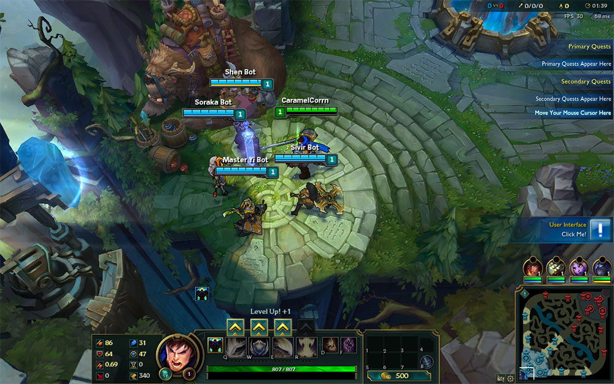
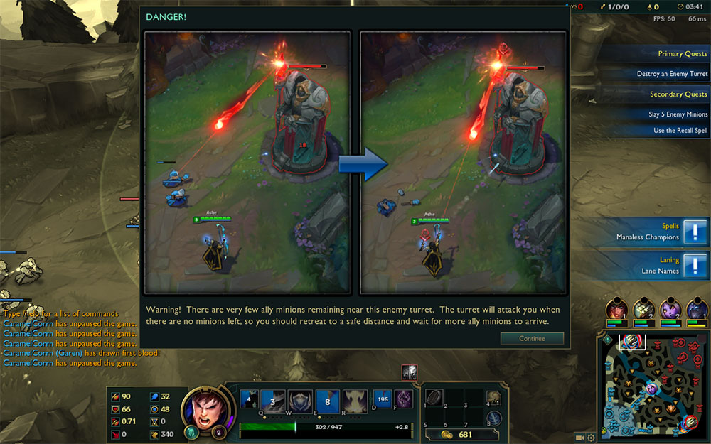
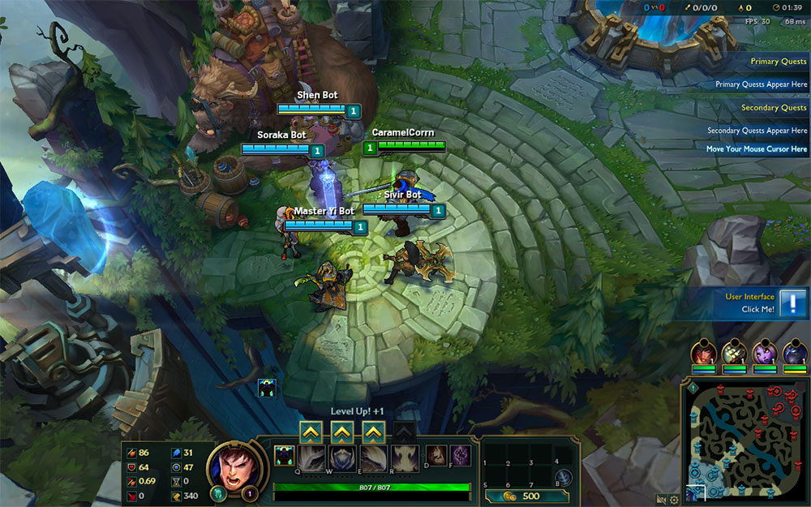
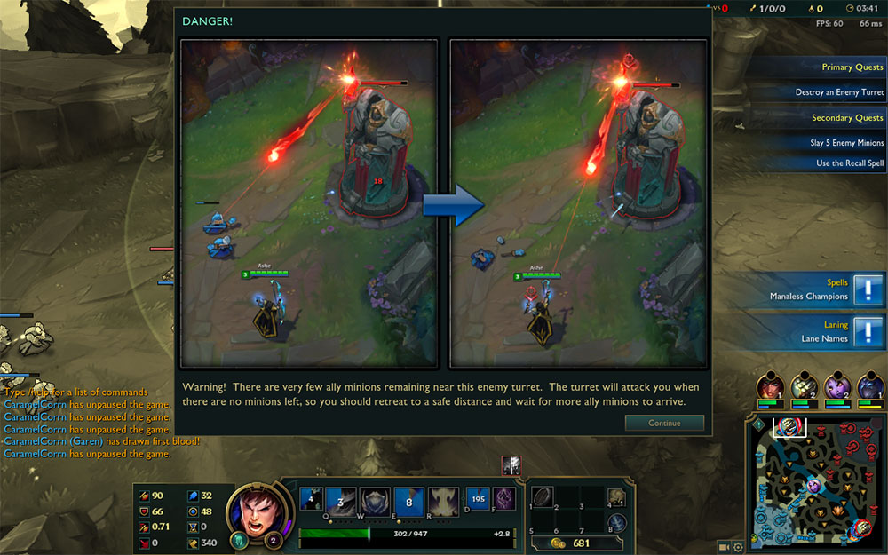
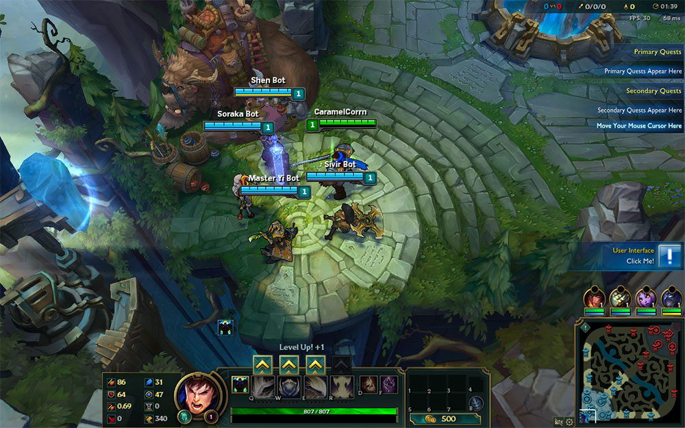
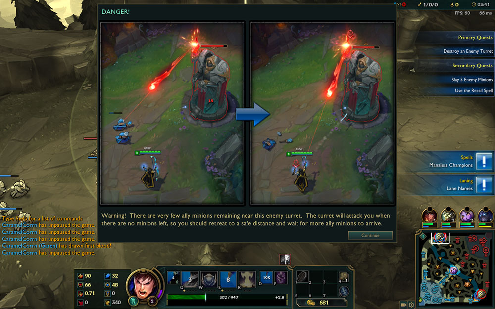

The two interfaces I will be comparing are from two different MOBA (multiplayer online battle arena) games. They are Blizzard’s Heroes of the Storm (HoTS) and Riot’s League of Legends (LoL). I have been playing League of Legends for over 3 years, so I have more experience in their interface and the changes throughout the years. I’ve recently started playing Heroes of the Storm (around summer of 2015), but I think I’ve played enough to get an understanding of their interface.
The first thing I will be comparing is the launcher. Heroes of the Storm images are provided on the left column, while League of Legends images are provided on the right. There’s not much on the HoTS launcher, just links to updates, news, and videos. The LoL launcher becomes the main interface before the actual gameplay, unlike the HoTS interface. They are two separate interfaces for the HoTS game. I think the LoL launcher as a lot more potential for user interaction and more appealing, “click bait”. They have interesting art displayed in numerous windows within the launcher. Everything is located within one window. HoTS, however, requires using the Blizzard launcher to get into the main HoTS interface. It is probably because Blizzard has multiple games and their launcher provides an easy way to open them, while Riot only has LoL.
In terms of aesthetic appeal, the LoL launcher is much more beautiful in my opinion. Their interface makes me want to play the game and own the characters they provide for sale. LoL displays their “champions” through splash art, which are usually visually amazing. HoTS displays their characters through 3D models, allowing the user to rotate and get a 360 degree view of the hero. HoTS has a more interactivity in this field because they allow users to test out the characters before choosing to buy them, as opposed to LoL, where users can only view snippets of the characters’ skills.
LoL has recently updated their champion select interface, bringing a lot of customization towards a player’s role in each game. It’s definitely important because there has always been a lot of drama when players do not get the role they want. Riot really tried to make it fairer for players so they can put a priority on the role they want to play. HoTS has a basic hero select since there is no real need for player specific roles.
Gameplay is similar, but I think HoTS has the upper hand because they have different modes of gameplay, as opposed to LoL, where there is only one main “map” where players play. Visually, LoL is better in my opinion. There is a lot more ways players can strategize and make plays that help them win the game.


I’m not sure how all of this will relate to my project, but it’s a start. I guess I want to lean more towards LoL’s way of gaming interaction where I bring the user in through the art and make them stay with some gameplay. It sounds a lot harder than I thought, now that I think about it. I don’t know how to make a game on Javascript, but I’m up for the challenge. I can also give my characters a back-story, like both games do (lore, information from other games, etc.) that would want to make the character get involved and progress through the story.